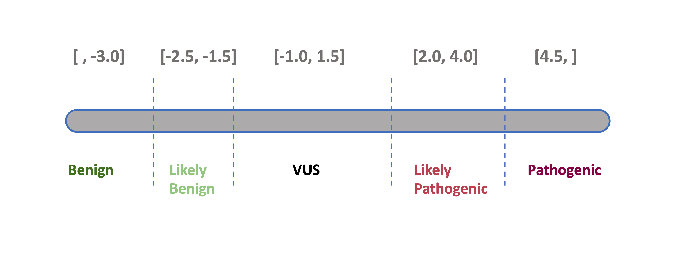

All coding, non-ClinVar variants in the set of genes subject to screening have been classified according to a standard, five-level pathogenicity scheme (coined CPSR_CLASSIFICATION). The scheme has the same five levels as those employed by ClinVar, i.e.
- pathogenic (P)
- likely pathogenic (LP)
- variant of uncertain significance (VUS)
- likely benign (LB)
- benign (B)
The classification performed by CPSR is rule-based, implementing most of the ACMG criteria related to variant effect and population frequency, which have been outlined in SherLoc (Nykamp et al., Genetics in Medicine, 2017), and also some in CharGer. Information on cancer predisposition genes (mode of inheritance, loss-of-funcion mechanism etc.) is largely harvested from Maxwell et al., Am J Hum Genet, 2016.
The refined ACMG/AMP criteria listed below form the basis for the tier assigned to the CPSR_CLASSIFICATION variable. Specifically, the score in parenthesis indicates how much each evidence item contributes to either of the two pathogenicity poles (positive values indicate pathogenic support, negative values indicate benign support). Evidence score along each pole (‘B’ and ‘P’) are aggregated, and if there is conflicting or little evidence it will be classified as a VUS. This classification scheme has been adopted by the one outlined in SherLoc.
| Tag | Description |
|---|---|
1. ACMG_BA1_AD (-5) |
Very high MAF (> 0.5% in gnomAD non-cancer pop subset, min AN = 12,000) - dominant mode of inheritance |
2. ACMG_BS1_1_AD (-3) |
High MAF (> 0.1% in gnomAD non-cancer pop subset, min AN = 12,000) - dominant mode of inheritance |
3. ACMG_BS1_2_AD (-1) |
Somewhat high MAF (> 0.005% in gnomAD non-cancer pop subset, min AN = 12,000) - dominant mode of inheritance |
4. ACMG_BA1_AR (-5) |
Very high MAF (> 1% in gnomAD non-cancer pop subset, min AN = 12,000) - recessive mode of inheritance |
5. ACMG_BS1_1_AR (-3) |
High MAF (> 0.3% in gnomAD non-cancer pop subset, min AN = 12,000) - recessive mode of inheritance |
6. ACMG_BS1_2_AR (-1) |
Somewhat high MAF (> 0.005% in gnomAD non-cancer pop subset, min AN = 12,000) - recessive mode of inheritance |
7. ACMG_PM2_1 (0.5) |
Allele count within pathogenic range (MAF <= 0.005% in the population-specific non-cancer gnomAD subset, min AN = 12,000) |
8. ACMG_PM2_2 (1) |
Alternate allele absent in the population-specific non-cancer gnomAD subset |
9. ACMG_PVS1_1 (5) |
Null variant - predicted as loss-of-function - within pathogenic range (ACMG_PM2_1/2) - LoF established for gene |
10. ACMG_PVS1_2 (2.5) |
Null variant - not predicted as loss-of-function - within pathogenic range (ACMG_PM2_1/2) - LoF established mechanism for gene |
11. ACMG_PVS1_3 (2) |
Null variant - predicted as loss-of-function - within pathogenic range (ACMG_PM2_1/2) - LoF not established mechanism for gene |
12. ACMG_PVS1_4 (0) |
Null variant - not predicted as loss-of-function - within pathogenic range (ACMG_PM2_1/2) - LoF not established mechanism for gene |
13. ACMG_PVS1_5 (2.5) |
Start (initiator methionine) lost - within pathogenic range (ACMG_PM2_1/2) - Lof established mechanism for gene |
14. ACMG_PVS1_6 (2) |
Start (initiator methionine) lost - within pathogenic range (ACMG_PM2_1/2) - LoF not established mechanism for gene |
15. ACMG_PVS1_7 (4) |
Donor/acceptor variant - predicted as loss-of-function - within pathogenic range (ACMG_PM2_1/2) - not last intron - LoF established for gene |
16. ACMG_PVS1_8 (2.5) |
Donor/acceptor variant - last intron - within pathogenic range (ACMG_PM2_1/2) - LoF established for gene |
17. ACMG_PVS1_9 (2) |
Donor/acceptor variant - not last intron - within pathogenic range (ACMG_PM2_1/2) - LoF not established mechanism for gene |
18. ACMG_PVS1_10 (2) |
Donor variant at located at the +3, +4 or +5 position of the intron - within pathogenic range (ACMG_PM2_1/2) - ACMG_PP3 support |
19. ACMG_PS1 (4) |
Same amino acid change as a previously established pathogenic variant (ClinVar - minimum two review stars) regardless of nucleotide change |
20. ACMG_PP2 (0.5) |
Missense variant in a gene that has a relatively low rate of benign missense variation (<10%) and where missense variants are a common mechanism of disease (>50% of high-confidence pathogenic variants (ClinVar)) |
21. ACMG_PM1 (2) |
Missense variant at critical AA residue (as identified in cancerhotspots.org) |
22. ACMG_PM4 (0) |
Protein length changes due to inframe indels or nonstop variant in non-repetitive regions (as identified by RepeatMasker) of genes that harbor variants with a dominant mode of inheritance. |
23. ACMG_PPC1 (0) |
Protein length changes due to inframe indels or nonstop variant in non-repetitive regions (as identified by RepeatMasker) of genes that harbor variants with a recessive mode of inheritance. |
24. ACMG_PM5 (1.5) |
Novel missense change at an amino acid residue where a different missense change determined to be pathogenic has been seen before (ClinVar - minimum two review stars) |
25. ACMG_PM6 (1.5) |
Disruption of essential nucleotide |
26. ACMG_PP3 (0.5) |
Multiple lines of computational evidence support a deleterious effect on the gene or gene product (conservation, evolutionary, splicing impact, etc. - from dbNSFP) |
27. ACMG_BP4 (-1) |
Multiple lines of computational evidence support a benign effect on the gene or gene product (conservation, evolutionary, splicing impact, etc. - from dbNSFP) |
28. ACMG_BMC1 (0) |
Peptide change is at the same location of a known benign change (ClinVar - minimum two review stars) |
29. ACMG_BSC1 (-3) |
Peptide change is reported as benign (ClinVar - minimum two review stars) |
30. ACMG_BP1 (-0.5) |
Missense variant in a gene for which primarily truncating variants (>= 90% of pathogenic variants) are known to cause disease (ClinVar) |
31. ACMG_BP3 (-2.5) |
Non-coding variant in the UTR or promoter region |
32. ACMG_BP7 (-2.5) |
Silent and intronic changes outside of the consensus splice site |
Currently (as of March 2025), based on a calibration against
ClinVar-classified variants (minimum two review status stars) in n = 105
core cancer predisposition genes, the clinical significance
(CPSR_CLASSIFICATION) is determined based on the
following ranges of pathogenicity scores:
